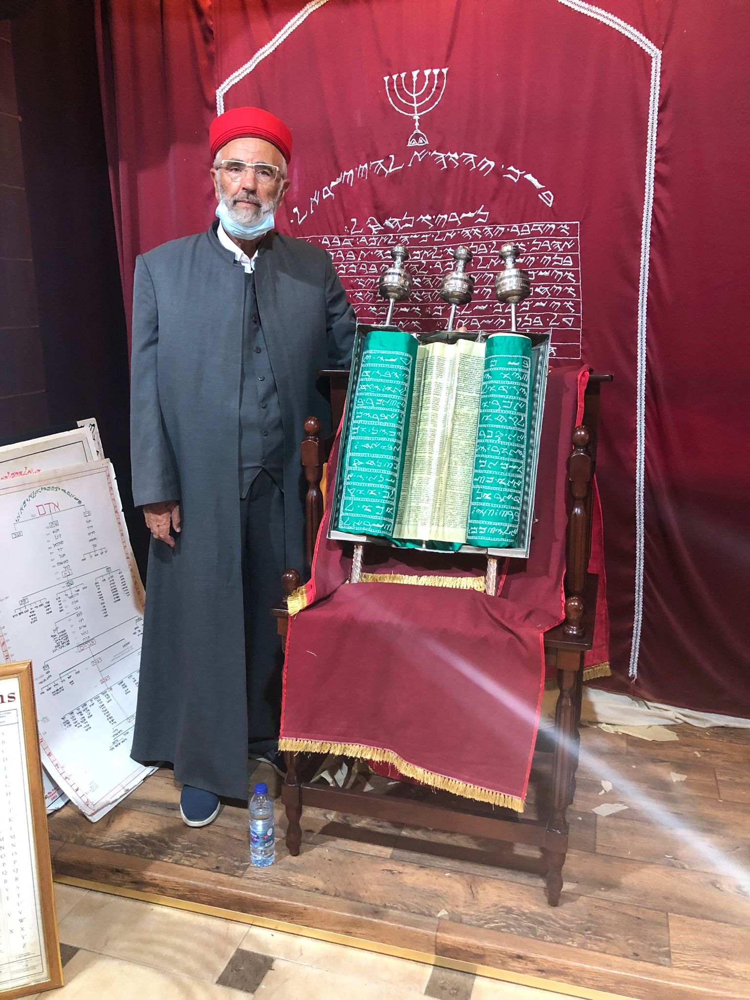
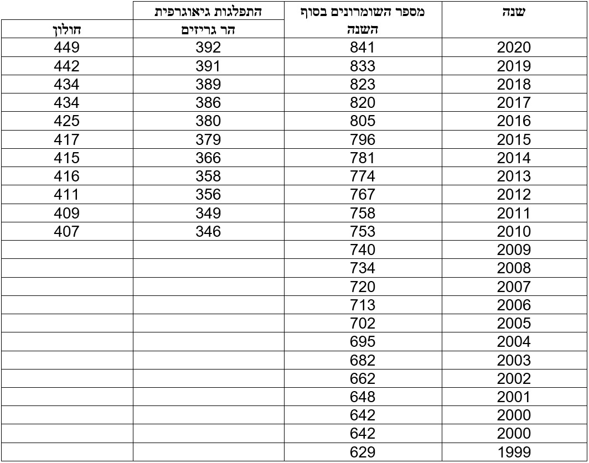
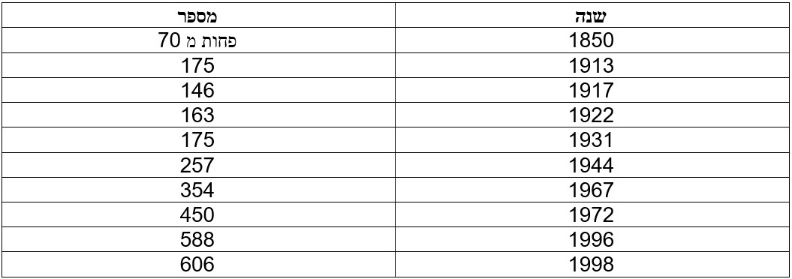

כללי
הדת השומרונית משמעותה כלל המסורות והמנהגים של בני עדת השומרונים.
השומרונים מאמינים ששמה של הדת לקוח מהמילה "שמרים" (מלשון 'שומרי התורה'), לפי הנוסח שלהם.
הם משתייכים לדת משה, כפי שהיא מתוארת בתורה, אך יש לעדה גרסה מקבילה לחגים ומנהגים המקובלים ביהדות.
אם נרצה לתאר את אמונתם על ידי משפט אחד, ננסח אותו כך:
"אימנתי בך ה', ובמשה בן עמרם עבדך, ובתורה הקדושה, ובהר-גרזים בית אל וביום נקם ושלם."

אמונותיהם של השומרונים
-
אל אחד
אמונתם באל אחד זהה לאמונת היהודים - אל אחד ויחיד, כל יכול, ושכל העולם מעשה ידיו.
בני האדם אינם מסוגלים להבין את טבעו, והם נתונים לחסדיו ומשום כך משרתים אותו.
-
תורת משה
הספר הקדוש היחיד הוא תורת משה כפי שהוכתבה למשה בן עמרם.
השומרונים נאמנים רק לקיום החוקים הכתובים בתורה, ואינם מכירים בתורה שבעל פה, במשנה, בתלמוד, בנביאים ובכתובים (למעט ספר יהושוע השונה מנוסח הספר במקרא).
התורה נבראה לפני בריאת העולם ומי שעוסק בה מובטח לו שיש לו חלק בעולם הבא. השינוי העיקרי שבו לעומת התורה שבידי היהודים הוא כי בעשרת הדיברות בדיבר העשירי מופיעה הפרשה הקשורה בבנית המזבח בהר גריזים.
-
משה הנביא
לפי אמונת השומרונים, משה הוא הנביא היחיד שאי פעם קם.
לטענתם, משה איננו עוד אדם. הוא יצור מיוחד במינו, הדומה יותר למאך מאשר לאדם רגיל.
רוב התפילות של השומרונים מקושרות אליו, והוא גם ה"משיח" שעתיד לבוא, ולהביא גאולה לעולם.
-
הר גריזים
לפי המסורת השומרונים, הר גריזים הוא מקום הפולחן הנבחר על ידי אלוהים.
השומרונים אינם מכירים בקדושת ירושלים, ואינם מכירים בהר המוריה (הר הבית).
לטענת השומרונים, בהר גריזים התרחשו כל המאורעות הבאים:
- עקידת יצחק
- הצבת מצבת אבני בני ישראל ע"י יהושוע בן נון, עליו נבנה המשכן לאחר שיהושוע עבר את הירדן
- עליו נבנה המזבח שבנה נח אחרי המבול
- מזבח אדם ושת, וגם גן העדן מכוונים להר גריזים
-
תורת הגמול והעולם הבא
השומרונים מאמינים ביום נקם ושלם (אחרית הימים) בו נביא משבטי יוסף הנקרא תהב, שיהיה נביא למשה ויפעל כמותו 40 שנה, יביא לחזרתם בתשובה של כל בני ישראל.
התהב יגלה את מקום המשכן שנגנז בהר גריזים בסוף תקופת הרחותה, וכך תסתיים תקופת הפנותה ויתחדשו ימי הרחותה. מותו וקבירתו לצד קבר יוסף בשכם תביא לתחיית המתים.
השומרונים מחזיקים בלאומיות פלסטינית וישראלית, וחלקם מחזיקים באזרחות ירדנית, בשל הנסיבות המיוחדות בהן הם חיים.
השומרונים סירבו לוותר על האזרחות הפלסטינית תמורת אזרחות ישראלית.
מספר השומרונים והתפלגות גיאוגרפית

